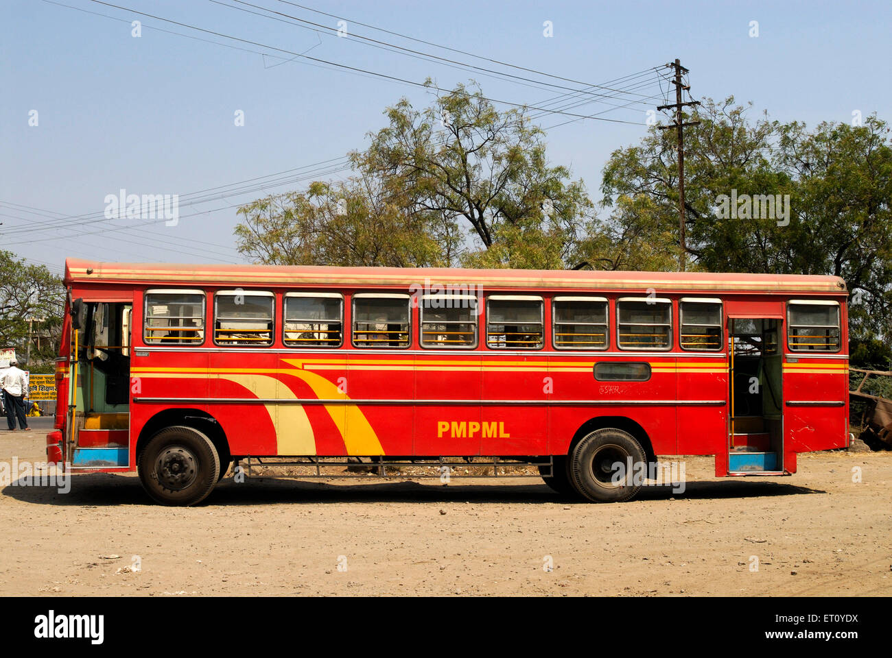

PUNE CITY BUS
Know exactly when
your bus arrives.
AI-powered ETA using real schedules and live Pune traffic patterns.
Open Live Tracker →
स्मार्ट बस ट्रॅकर
Smart · Fast · Reliable
पुणे बस ट्रॅकर
बस स्टॉप निवडा आणि ETA जाणून घ्या
लाइव्ह ट्रॅकर →